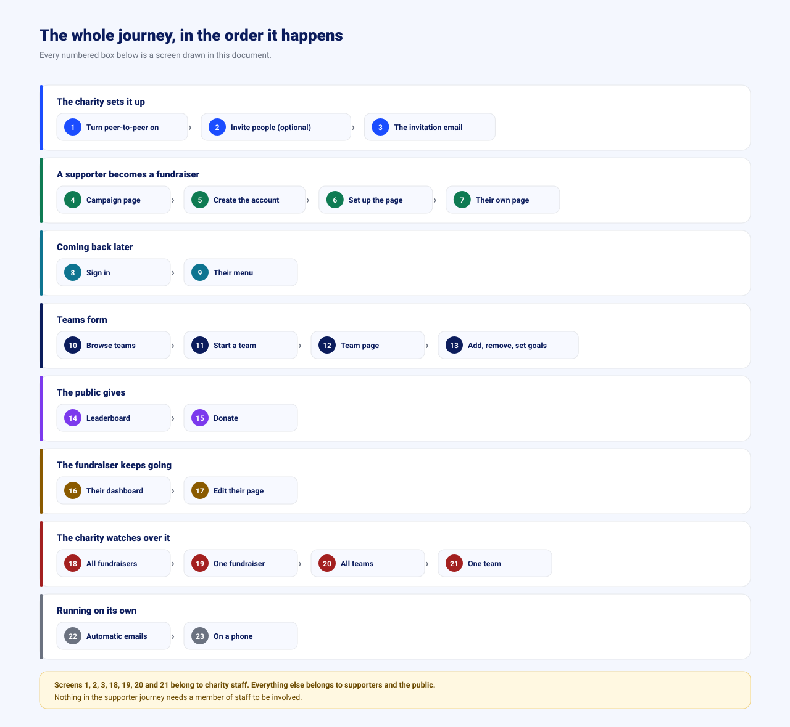
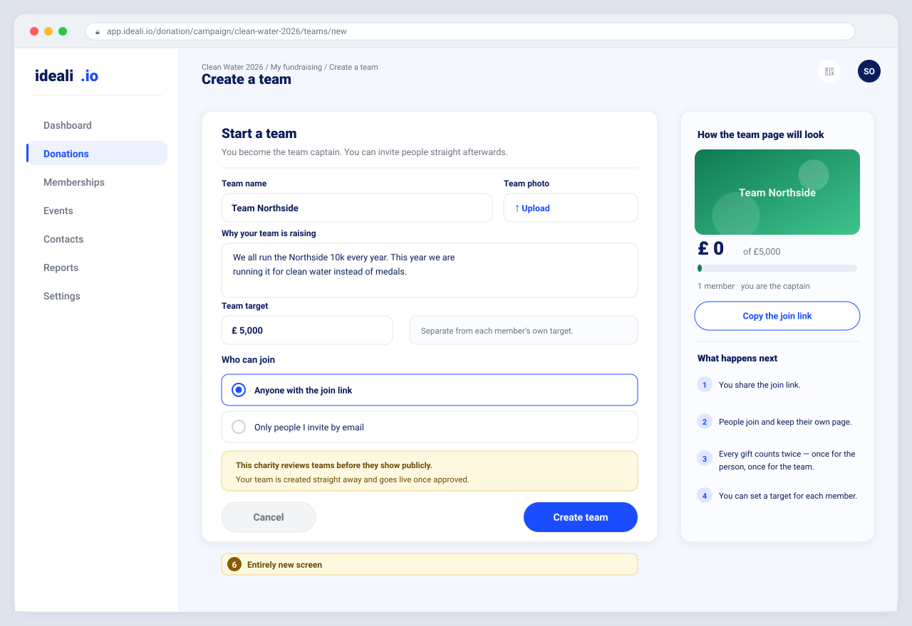
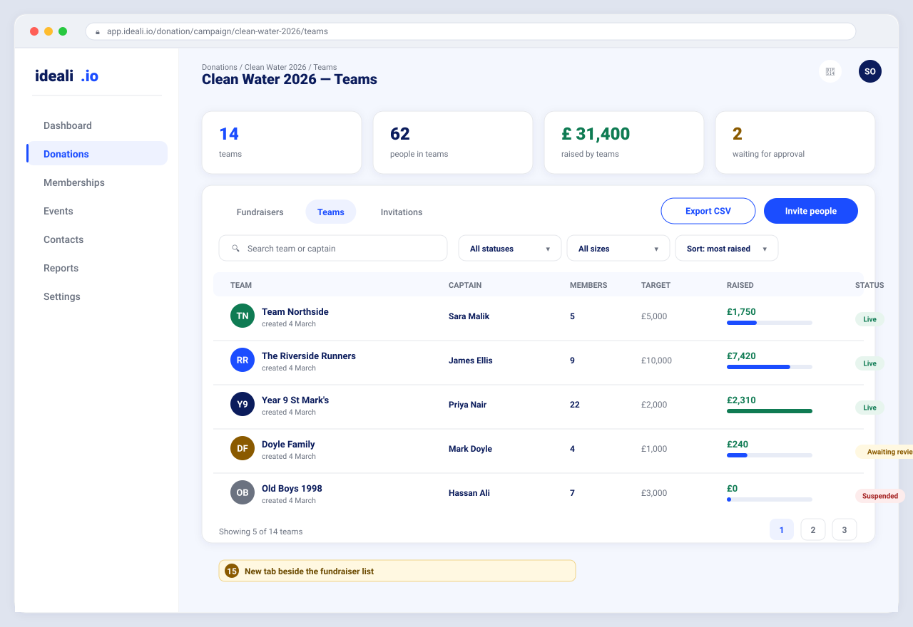
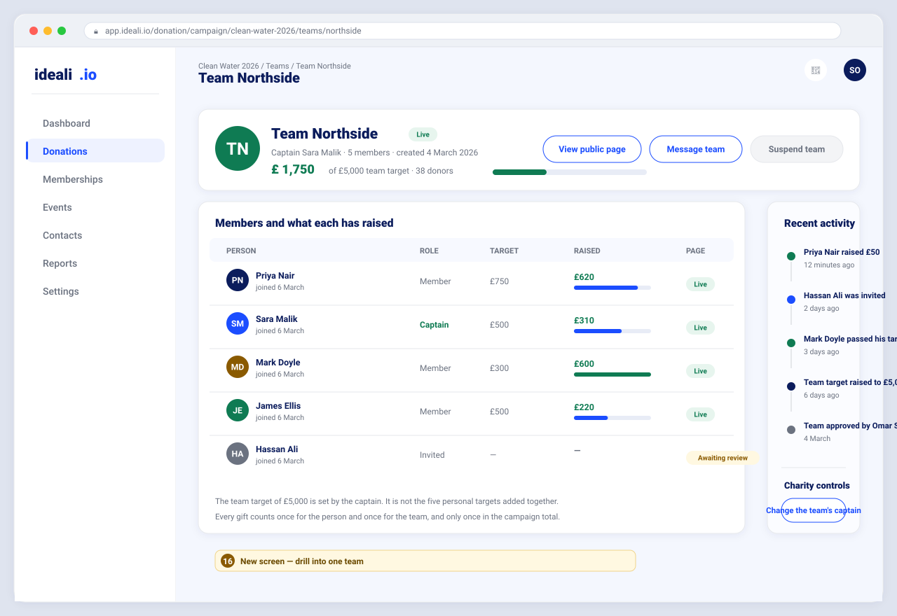
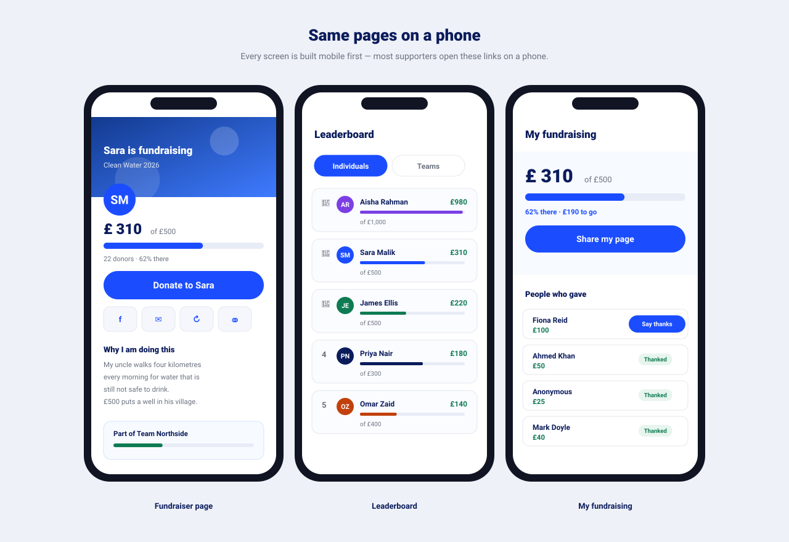

IDEALI.IO · PRODUCT PROPOSAL · FOR LEADERSHIP · FINAL · 19 AUGUST 2026
Let supporters raise money for the charity, not just give money to it.
Today a charity asks its supporters for money. After this change, a supporter can ask their own friends and family on the charity's behalf — from their own page, with their own photo, their own reason and their own target. Every pound still lands in the charity's account. This is what every serious fundraising platform already offers, and it is the biggest single gap in our donation product.
Every screen in this document is a proposed design, drawn for this proposal. None of it is built yet, and nothing here has been shown to a customer.
1The whole thing in one page
What changes for a charity using ideali
A charity runs a campaign called Clean Water 2026 with a £100,000 target. Today, that campaign has one page and one Donate button, and the charity's own staff have to find every donor.
After this change, the charity flips one switch. Now any supporter can press "Fundraise for us" and get their own page in two minutes. Sara sets her own target of £500, writes why she cares, adds a photo, and sends the link to her family. Her uncle gives £50 on her page.
That £50 goes to the charity exactly as it does today. The only new thing is that the system remembers it came through Sara — so Sara's page shows £50 of £500, her team's page goes up by £50, and the campaign total goes up by £50. One gift, counted once as money, credited in three places.
Why the charity cares
- The charity reaches people it has never met — Sara's family, not the charity's list.
- The charity's staff stop doing the asking. Eighty-six supporters do it instead.
- Every new donor is captured in the charity's own contact records, not a stranger's.
Why we care
Charities comparing platforms tick this box first. Right now we cannot tick it, and we lose the comparison before anyone looks at the rest of our product — which is already strong.
2What peer-to-peer actually means
Two words, one idea: the supporter does the asking.
How it works today
- The charity creates a campaign page.
- The charity emails and posts the link.
- People who already know the charity give.
- Growth stops at the size of the charity's own list.
How it works after this
- The charity creates the same campaign page.
- Supporters make their own pages under it.
- Each supporter asks their own circle.
- Growth follows the supporters' networks, not the charity's list.
The example we will use all the way through
Hope Foundation runs Clean Water 2026, target £100,000.
Sara signs up, sets her own target of £500 and writes why.
Sara joins Team Northside, her running club, target £5,000.
Sara's uncle gives £50 on Sara's page, not the charity's.
Who a fundraiser is, and what they log in with
This is the one structural question underneath the whole feature, so it is worth settling in plain words before any screen is discussed.
A fundraiser is a supporter, not a new kind of staff
Sara is not an employee of Hope Foundation and does not work for us. She is an ordinary supporter who pressed one button on a campaign page and now has a page of her own.
So she signs up once — name, email, password, about a minute — and signs in the same way every other supporter does. One account, one profile, one password reset. There is no separate portal and no second login to explain to her.
What we looked at and are not doing
We considered giving fundraisers their own separate account type with its own login, kept apart from members.
We are not doing it, for two reasons. No competing platform does it — on every one of them a fundraiser is simply a signed-up supporter. And it breaks the case that matters most to our customers: a charity's existing members are its best fundraisers, and a separate account type would force those people to hold two logins for the same charity.
Keeping one account type also keeps the charity's contact list whole, which is where the repeat giving comes from.
Two ways somebody becomes a fundraiser
| Route in | How it works | Why it exists |
|---|---|---|
| They join themselves the main route |
Sara is reading the campaign page, presses Fundraise for this, signs up and has a page in two minutes. Nobody at the charity had to do anything. | This is where the growth comes from. Every supporter who gives is a supporter who might raise, and the invitation costs the charity nothing. |
| The charity invites them the deliberate route |
The charity enters a name and email, or picks someone already in its member list. That person gets an email, accepts, and lands on the same short sign-up. | For the specific people a charity wants on board — a patron, a committee, a school class. Useful, but it is the smaller of the two numbers. |
How teams sit on top of this
- Any fundraiser can start a team and becomes its captain.
- The captain names the team, writes its reason, sets its target and shares a join link.
- Anyone who follows that link joins the team and keeps their own page and their own target.
- The charity can require teams to be approved before they show publicly, using the same switch as pages.
Two targets, on purpose
Sara has a personal target of £500. Team Northside has a team target of £5,000. These are set separately and are not the same number added up — a team of six people with £500 targets can still choose to aim at £5,000.
Both progress bars are shown, and both are driven by the same credited gifts. Neither is a guess.
3Why we are doing this now
It is the gap that costs us deals
Our donation product already does campaigns, recurring giving, invoices, multiple payment providers, tips and reporting well. Peer-to-peer is the one thing a charity asks about early and we cannot demonstrate.
It is mostly building on what we have
Payments, receipts, refunds, contact records, campaign setup and reporting already exist and are reused untouched. We are adding pages, a way to sign up, and the counting that ties a gift to a person.
It sells the rest of the product
A supporter who runs a page becomes a contact we hold, a donor we can thank, and often a member later. This feature feeds our memberships and events modules rather than sitting on its own.
What the market already does, and we do not
We reviewed twelve platforms a charity would realistically compare us against. Peer-to-peer fundraising is not a differentiator in this market — it is the price of entry. The pattern is the same across all of them.
| Platform | Personal fundraising pages | Teams and leaderboards |
|---|---|---|
| Zeffy | Yes | Yes |
| JustGiving | Yes | Yes |
| Classy | Yes | Yes |
| GoFundMe Charity | Yes | Yes |
| Donorbox, Givebutter, Bloomerang, Funraise, DonorDrive, Enthuse, Blackbaud, Raisely | Yes | Yes |
| ideali today | No | No |
The detail behind this table, feature by feature, is in the companion competitive review and gap documents.
What happens if we do nothing
Nothing breaks. We keep selling to charities who want campaign giving, memberships and events, and we keep losing the ones who run a run, a walk, a challenge or a birthday-giving programme — which is where the volume in this sector sits.
The cost is not a missing feature. It is that we are removed from the shortlist before we ever get to demonstrate the parts of the product that are genuinely strong.
What we are not claiming
We are not claiming this wins deals on its own, and we have deliberately not put a revenue number in this document, because we do not have won/lost data good enough to support one.
If leadership wants a revenue case rather than a capability case, the honest way to get one is to count how many opportunities in the last twelve months named peer-to-peer as a requirement. Sales owns that answer, not us.
4Every new screen, in order
Below is the whole product, screen by screen, in the order a real campaign would use them. Each picture shows what the user sees and what they can do there.
Every screen a person can reach is drawn below, in the order it happens. The map first, then the screens one at a time. Each screen also states how somebody navigates to it, so the route through the product is never a guess.

Six stages, eighteen screens, in the order somebody actually meets them.
Only three places to remember
Every screen below sits under one of three entry points. Nothing is hidden in a fourth menu, and nothing needs a new app.
| Entry point | Who uses it | What is behind it |
|---|---|---|
| Donations › Campaigns the organiser menu they already use |
Charity staff | Turning the feature on, inviting people, and the Fundraisers, Teams and Invitations tabs on the campaign — screens 1, 2, 13, 14, 15, 16 and 17. |
| My fundraising a new item in the supporter’s own menu |
Fundraisers and team captains | Their dashboard, their page, editing it, starting a team and running it — screens 5, 6, 8, 11 and 12. |
| A public web address shared in a message, post or QR code |
Anyone, signed in or not | The campaign page, personal and team pages, the leaderboard and the donation screen — screens 3, 4, 7, 9 and 10. |
A. The charity switches it on
Two screens, both optional beyond the first. Nothing changes on any existing campaign until somebody turns this on.

A new step inside the campaign setup the charity already uses.
Nothing happens until they say so
How staff get hereSign in as organiser Donations Campaigns open a campaign Edit Peer-to-peer step
The switch is off by default, so every existing campaign carries on exactly as it is. When a charity turns it on, it chooses whether supporters can fundraise alone, in teams, or both, and whether it wants to approve each page before it appears.
It can also suggest a target — £500 here — which every supporter is free to change on their own page.

Pick existing members, or type a name and an email. Then press Send.
Inviting, never adding
How staff get herethe campaign Fundraisers tab Invite fundraisers
Most fundraisers arrive on their own from the campaign page. This screen is for the specific people a charity wants to ask directly — a patron, a committee, a school class.
Staff can pick people already in their member list or type a name and email for somebody new, write one message, and send.
The right-hand column shows what happened to each invitation, so nobody has to guess. Nothing appears publicly until the person accepts — a page carries their name, photo and story, so it is theirs to agree to.
B. A supporter becomes a fundraiser
Three screens, start to finish, with nobody from the charity involved.

The charity's existing public page, with two additions.
One new button, one new panel
How anyone gets herethe campaign's public web address — shared by email, social post or QR code — no sign-in needed
The campaign page keeps its total, its progress bar and its Donate button. We add a "Fundraise for us" invitation and a panel showing who is already raising money — which is itself the strongest advert for joining in.
Everything else on this page stays where it is.

Name, email, alone or in a team, a target and a reason. That is all.
Two minutes, not twenty
How a supporter gets herecampaign page Fundraise for this sign up or sign in
Long sign-up forms kill this feature. We ask for the minimum, create the page immediately, and let the person improve it afterwards.
If the charity chose to review pages first, the page is created but stays hidden until the charity approves it.

The heart of the whole feature — Sara's own page, with her own link.
Sara's page, not the charity's
How a fundraiser gets herestraight after signing up and afterwards from My fundraising My page
Her photo, her words, her target, her progress. People give to Sara and see their gift move her bar — that personal connection is why peer-to-peer raises money that a campaign page alone never reaches.
The page carries share buttons because almost every gift arrives through a link Sara sent to somebody.
The line "Goes straight to Hope Foundation" is deliberate. Donors need to know the money is not passing through Sara's hands.
C. Teams form
Three screens: start the team, the team's public page, and the one screen that runs it.

Name it, say why, set the team target, get a join link.
Whoever starts the team is its captain
How a supporter gets herecampaign page Fundraise as a team or My fundraising Start a team
Starting a team takes one short form. The person who fills it in becomes the captain and gets a join link to share.
The team target is set here and is separate from each member's own target. Six people with £500 targets can still aim at £5,000 together.
If the charity chose to review teams first, the team is created immediately but stays hidden until it is approved — the same switch that governs individual pages.

A group — a running club, a workplace, a school class — with one shared goal.
Teams are where the big numbers come from
How anyone gets herethe team's public web address or the leaderboard click the team's name — no sign-in needed
One person raising £500 is good. Fourteen people who will not let their team down raise £5,000. The team page shows the shared total and every member's own progress, which is friendly competition doing the work for us.
A donor can give to one member or to the team as a whole. Both are handled, and the panel on the right explains the difference to the donor in plain words.

One table: who is in, what each is aiming at, what each has raised.
Running a team is one screen
How the captain gets hereMy fundraising My team Members — captain only
Adding is a join link to share or an email invitation — the person accepts and lands in the team with their own page.
Setting a goal is editable in the row: the captain can give one member £750 and another £300. Changing the captain hands the team over to somebody else.
Removing takes the person out of the team. It does not delete their page, and money they already raised stays with the campaign — a leaderboard that could be rewritten by removing somebody would be worthless.
D. The public gives
Two screens. The second is the donation screen we already have, with one banner added.

Individuals or teams, ranked by money raised or by number of donors.
Competition, made visible
How anyone gets herecampaign page Leaderboard tab — no sign-in needed
Charities ask for this by name. Being second on a public list is a strong reason to send three more messages.
Sorting by number of donors as well as by amount matters: it lets a student who raised £80 from twenty friends be celebrated next to somebody with one large cheque.

Our existing donation screen. The banner at the top is the only visible change.
The safest part of the whole project
How a donor gets hereany fundraiser or team page Donate — no sign-in needed
Amounts, one-off or monthly, donor details, card and bank payment, receipts — all untouched. We add a banner saying who is being supported, and we record that person against the gift.
Because we are reusing the checkout we already trust, we are not putting any existing income at risk to ship this.
E. The fundraiser keeps going
Two screens. This is the part that decides whether £310 becomes £500.

Where Sara lives while her campaign is running.
Keeping people going is the job
How a fundraiser gets heresign in My fundraising in their own menu
Most fundraisers stall after the first few gifts. This screen exists to restart them: how close they are, who has given, who still needs thanking, and their link ready to copy.
Thanking donors is on this screen on purpose — a thanked donor is the one most likely to give again next year.

Photo, name, target and story — with a live preview beside it.
Personal pages raise more
How a fundraiser gets hereMy fundraising Edit my page
A page with a real photo and a real reason out-raises a blank one by a wide margin, so this screen has to be easy enough that people actually finish it.
The preview on the right removes the guesswork about what the public will see.
F. The charity watches over it
Four screens in one order: all fundraisers, one fundraiser, all teams, one team.

Every fundraiser and team in one list, with approve, suspend and export.
Public pages need a safety switch
How staff get hereDonations Campaigns open a campaign Fundraisers tab
Once the public can create pages under a charity's name, the charity must be able to approve, hide or remove one quickly. That is not optional and it ships with the feature, not after it.
Export gives the fundraising team the same list in a spreadsheet for their own reporting.

Everything the charity needs about one person, on one screen.
The drill-down from the list
How staff get hereFundraisers tab click any person's row
Clicking any row in the list opens the person: what they have raised, every gift behind that number, which team they belong to, and what their page says.
The refund line matters. When money comes back, it comes off the person's total, off their team's total and off the campaign total — all three move together, always. A leaderboard that keeps counting refunded money is a leaderboard that lies.
Suspending hides the page. It never removes money already raised.

The same list, one level up: teams instead of individuals.
Teams get their own tab
How staff get herethe same screen Teams tab
Fundraisers, teams and invitations sit as three tabs on the same screen, so staff never have to learn a second place to look.
The four counters across the top answer the question staff actually ask — how many teams, how many people in them, how much they have raised, and how many are waiting for approval.
Search, filter and export work exactly as they do everywhere else in the product.

The team, then the people inside it. The last level down.
Two numbers, never confused
How staff get hereTeams tab click any team's row
The header shows the team total against the team target. The table below shows each person against their own. Neither is calculated from the other.
The activity feed is what staff use to spot a team that has stalled, or one that is about to beat its target and deserves a phone call.
This is the deepest the charity ever needs to go: campaign, then team, then person.
G. Running in the background
Two things that are not really screens: the emails that go out on their own, and every screen above on a phone.

Three automatic emails, sent without anyone at the charity lifting a finger.
This is what makes the feature pay
Where staff control thisthe campaign Peer-to-peer step Emails — nobody has to send these by hand
A fundraiser who is thanked and gently pushed raises considerably more than one left alone. With eighty-six pages running, no charity can do that by hand.
Three triggers cover most of the value: a gift arrived, you are halfway, and your page has gone quiet for a week.

The same pages, built for the screen most donors will actually use.
Phone first, not phone later
How anyone gets herethe same web addresses, in a phone browser — nothing to install
These links travel through WhatsApp, Messenger and text. The overwhelming majority of people who open one will do it on a phone, in a few seconds, one-handed.
So every screen here is designed for the small screen first and expands to desktop, rather than the other way round.
5How we will deliver it
Five stages. Each one is finished and usable before the next begins, so the work can be stopped, shown or re-prioritised at any point without leaving something half-built.
What we build: a gift can be tied to a person, and it correctly moves three totals — the fundraiser, the team, and the campaign.
Why first: everything else is a view of this. Nothing visible ships in this stage, and it carries nearly all of the technical risk.
Done when: a gift credits three totals; a refund, a partial refund and a card dispute each take the right amount back off all three; and the leaderboard reorders to match, with nobody re-entering anything by hand.
What we build: supporters can join, get a page, add a photo, a story and a target, share it, and watch their own progress.
Why second: this is the first stage you can put in front of a charity and let them use for real.
Done when: a supporter goes from "Fundraise for us" to a live page with a shareable link, unaided.
What we build: teams, team pages, captains, and the public leaderboards for both individuals and teams.
Why third: this is the point where our product stands up next to the platforms charities compare us with.
Done when: a campaign with fifty fundraisers is fast and readable on a phone.
What we build: the automatic emails, and the charity's approve, suspend and export tools.
Why fourth: it needs real pages and real gifts to be worth anything, and it is what keeps totals climbing after week one.
Done when: a fundraiser who stops is nudged without a member of staff noticing first.
What we build: the credit flows into the charity's contact records, so it can see that Sara brought in twenty-two donors.
Why last: it depends on everything above being correct, and it is what makes a charity renew rather than just try us.
Done when: the charity can report on who influenced which income.
After Stage 3, run a closed pilot with two or three friendly charities on one live campaign each.
Real supporters find the awkward parts that no internal review does, and fixing them before general release is far cheaper than fixing them after.
What we are asking for instead of a date: a named backend owner and a two-week window to complete that review. Dates for all five stages follow within a week of it finishing, and we will hold to them.
6What it will take
No dates yet, for the reason above. Size, shape of team, and the known hidden costs we can give now, because none of those depend on the backend review.
| Stage | Size | What drives the size |
|---|---|---|
| 1 — The counting | Large | Mostly backend, plus the automated testing this product does not have today. |
| 2 — Pages and sign-up | Large | Seven new screens, public and private, on phone and desktop. |
| 3 — Teams and leaderboards | Medium | Six screens, and totals that stay correct as people join, leave and change target. |
| 4 — Automation and control | Medium | Automatic emails, and the four screens staff use to browse, approve, suspend and remove. |
| 5 — Records and reporting | Small | Exports and reporting, built on reporting we already have. |
The team this needs
One backend engineer and one frontend engineer working together for the whole run, with design and testing available part-time rather than borrowed from other projects.
Splitting either role across other work is the most reliable way to turn this into a stalled feature, because Stages 1 to 3 depend on each other in order.
Two costs that are real but invisible in the screens
The existing donation checkout has to be rebuilt internally first. It has grown into a single very large screen. It works today, but it cannot safely absorb the new "you are supporting Sara" behaviour as it stands. Rebuilding it changes nothing a user sees, and it has to happen inside Stage 2.
Automated testing starts from zero. There is no test coverage anywhere in this product today, so Stage 1 carries the cost of putting the first testing in place as well as the feature itself. See decision 8.
7What we need from leadership
Eleven sign-offs. Eight come with our recommendation, so agreeing with those is a single yes. Three we are deliberately leaving open, because they are not ours to decide and guessing them would be worse than asking.
1. Must a supporter create an account to fundraise?
The alternative is a link emailed to them that logs them straight in.
Recommended: yes, an account. It is safer, simpler, and they become a contact we hold.
2. Can a team contain other teams?
For example, a region containing branches containing clubs.
Recommended: no, not in this phase. It complicates every total for a small number of customers.
3. Must every fundraiser set a target?
A page without a target has no progress bar, which weakens it.
Recommended: optional, but pre-filled with the charity's suggestion so most people keep it.
4. Does the charity approve pages before they appear?
Approval is safer; instant publishing raises more money.
Recommended: a switch per campaign, off by default, so each charity chooses.
5. Who pays the processing fee on a peer-to-peer gift?
The charity, the donor as an optional top-up, or us. Our closest competitor sells hard on the donor covering it and the charity keeping 100%.
Recommended: keep exactly what the charity has already set for ordinary gifts. This is a pricing decision, not a product one, and it should not get made quietly inside this feature.
6. Do fundraisers use the ordinary supporter account?
The alternative is a separate fundraiser account type with its own login, kept apart from members.
Recommended: the ordinary account. No competitor separates them, and separating them would force an existing member who wants to fundraise to hold two logins.
7. Can a charity add a fundraiser without being asked?
Adding somebody directly is faster than inviting them and waiting.
Recommended: no. Adding is always an invitation the person accepts, because their name and photo end up on a public page.
8. Do we approve automated testing as part of Stage 1?
This product currently has no automated tests at all. This feature decides who gets credited with money, and a quiet mistake in that counting is the kind of thing a charity discovers in front of its own donors.
Recommended: yes, and it is a prerequisite, not a follow-up. We consider Stage 1 unsafe to ship without it.
Three questions we are not answering ourselves
Each of these has a legal, financial or brand consequence that sits outside engineering. We would rather show them open than quietly pick an answer and have it discovered later.
A. Gift Aid on peer-to-peer gifts
A donor giving through Sara's page is giving to the charity, so the claim belongs to the charity. But the declaration has to be collected on the page the donor actually used, and it has to survive a refund.
Needs a finance and compliance answer before Stage 2 is designed in detail. Getting this wrong is a reclaim problem, not a bug.
B. What happens when somebody leaves a team
Does the money they raised stay with the team, or leave with them? Both answers are defensible, and both will upset somebody.
Our lean is that raised money stays with the team, because the donors gave while that person was on it. It is a promise we make to customers, so it should be decided rather than assumed.
C. Personal data on public pages
A fundraiser page publishes a real person's name, photo and story to the open internet under the charity's brand, and search engines will index it. Under-18 fundraisers, consent wording, photo moderation and what happens on deletion all follow from this.
The approval switch in decision 4 is a control, not a policy. The policy needs a data-protection answer.
8What could go wrong, honestly
| The risk | What it looks like if it happens | What we are doing about it |
|---|---|---|
| A gift is credited to the wrong person, or to nobody | Nobody notices for weeks. A fundraiser's total is quietly wrong, and we look untrustworthy on the one number that matters. | Stage 1 exists only to get this right. Automated tests around it, and a gift with a bad reference is rejected loudly instead of being accepted and lost. |
| The supporting backend work is larger than expected | The timeline moves after we have already committed to it. | The review of what already exists is the first task and finishes before any date is promised. |
| Somebody creates an offensive or fake page | It carries the charity's name and appears in search results. | Approval switch, plus suspend and remove available from day one — not added later. |
| Leaderboards slow down on a large campaign | A campaign with a thousand fundraisers becomes slow exactly when it is most visible. | Pages are loaded in blocks rather than all at once, and totals are worked out rather than stored, so they can never drift. |
| Automatic emails land in spam, or breach marketing rules | The three encouragement emails stop arriving, fundraisers go quiet, and the feature looks like it does not work. | Sending domain, unsubscribe handling and delivery monitoring are part of Stage 4, not an afterthought once emails are already going out. |
| Everything in this document is shown in pounds | A charity outside the UK sees amounts in the wrong currency on a public page carrying their own name. | Pounds are used here only as an example. Every amount follows the currency the charity already has set, exactly as the existing donation screens do. |
| Scope grows during the build | Badges, contests, custom questions and social integrations arrive one at a time and nothing ships. | The list in this document is fixed. Anything else is written down for the next phase, not added to this one. |
Deliberately not in this phase
Badges, contests and prize levels for fundraisers.
Facebook fundraiser syncing, text-to-give, and cryptocurrency.
A mobile app, livestream giving, and matched-giving campaigns.
These are all reasonable requests and several are worth doing. None of them changes whether a charity can run peer-to-peer at all, which is what this phase is for.
In one sentence
We are adding the one thing our donation product cannot currently demonstrate, by building eighteen well-defined screens on top of the payments, records and reporting we already have — and we would rather take one short review of the backend before quoting a date than quote one now and correct it later.